IIS (Internet Information Services) es el servidor web de Microsoft para Windows. Publica sitios y
aplicaciones mediante HTTP/HTTPS y se integra con componentes de Windows Server, como HTTP.sys y Windows
Process Activation Service (WAS), para recibir solicitudes y administrar procesos de trabajo.
Características principales de IIS:
Procesamiento de solicitudes
Procesamiento de solicitudes: HTTP.sys recibe tr?fico HTTP/HTTPS y lo dirige al sitio y al
grupo de aplicaciones correspondiente.
Integración con Windows
Integraci?n con Windows: se administra como rol de Windows Server y puede alojar contenido
est?tico y aplicaciones compatibles, incluido ASP.NET.
Administración de sitios
Administraci?n por sitios: permite configurar enlaces, certificados, m?dulos, permisos y
grupos de aplicaciones de manera independiente.
Protocolos y tecnologías habituales:
HTTP para servir sitios web y aplicaciones.
HTTPS con TLS para proteger las conexiones web.
FTP/FTPS cuando se instala y configura el servicio
FTP de IIS.
WebSocket para aplicaciones que requieren
comunicación bidireccional.
Ventajas de usar IIS:
Integración nativa con Windows Server y sus
herramientas de administración.
Administración centralizada de sitios, grupos de
aplicaciones y certificados.
Soporte para contenido estático y aplicaciones web
compatibles con .NET.
Aislamiento de aplicaciones mediante grupos de
aplicaciones.
Registros y módulos configurables para operación y
diagnóstico.
Desventajas de usar IIS:
Requiere Windows y licenciamiento de la plataforma
correspondiente.
Las opciones disponibles dependen de la versión y los
roles instalados.
Permisos, módulos o enlaces mal configurados pueden
exponer aplicaciones.
Funcionamiento de IIS:
IIS se instala como rol de Windows. HTTP.sys escucha las solicitudes HTTP/HTTPS y las entrega al sitio y
grupo de aplicaciones configurados; WAS administra la activación de procesos. El administrador define
enlaces por IP, puerto y nombre de host, selecciona el directorio de contenido, controla permisos y
certificados, y revisa los registros para comprobar solicitudes y errores.
Virtualización e implementación de IIS:
Documentación: Consulta la guía oficial de IIS. Las capturas que siguen se conservaron del tutorial de
iis y son solo una referencia visual de VirtualBox; no muestran la instalación de este servicio.
VirtualBox: Consulta las descargas oficiales si necesitas virtualizar el entorno.
Preparación de la máquina virtual
Crea una máquina virtual con Windows Server, siguiendo los requisitos de IIS.
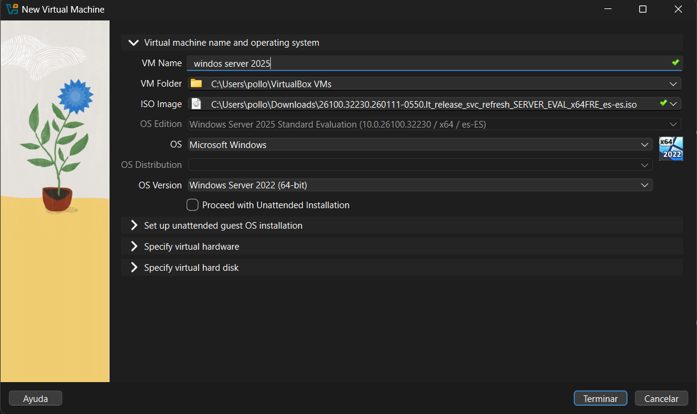
Asigna CPU y memoria según la carga prevista; los valores dependen del entorno.
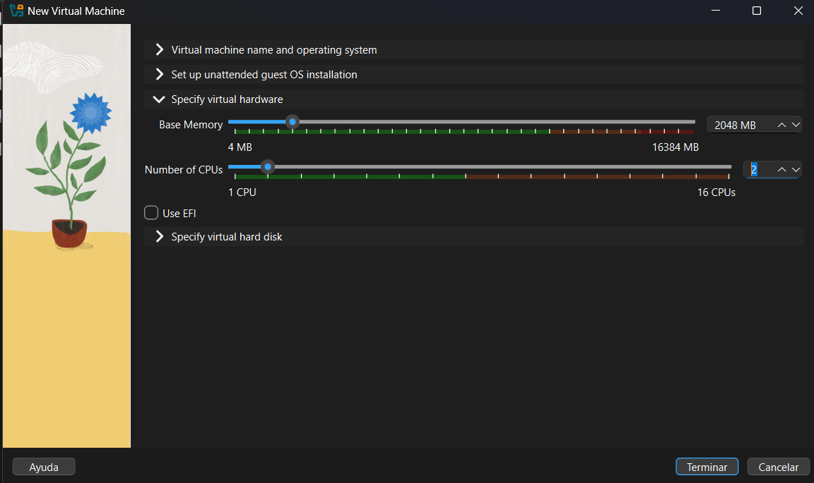
Crea un disco virtual con espacio suficiente para el sistema y los datos del servicio.
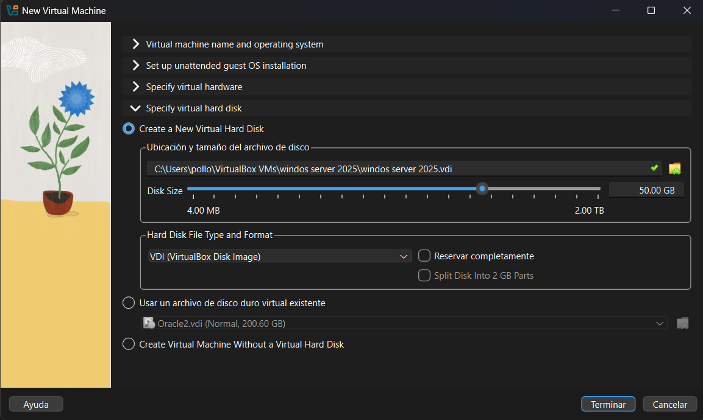
Monta la ISO del sistema operativo y confirma el orden de arranque de la VM y Selecciona el idioma
una vez ya haya iniciado la vm.
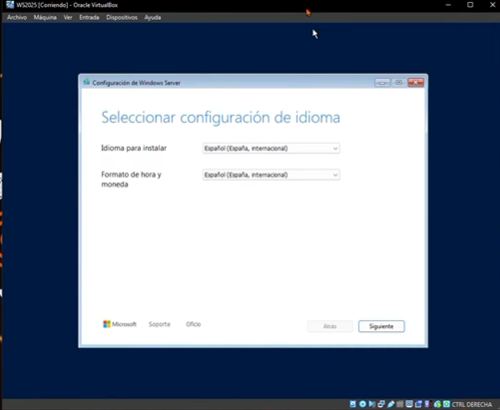
Instala a version estandar
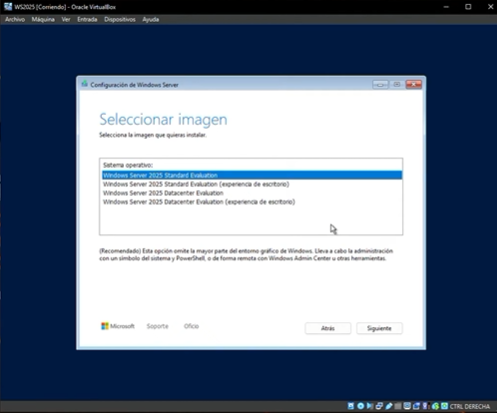
Selecciona el disco duro donde se instalará el sistema operativo.
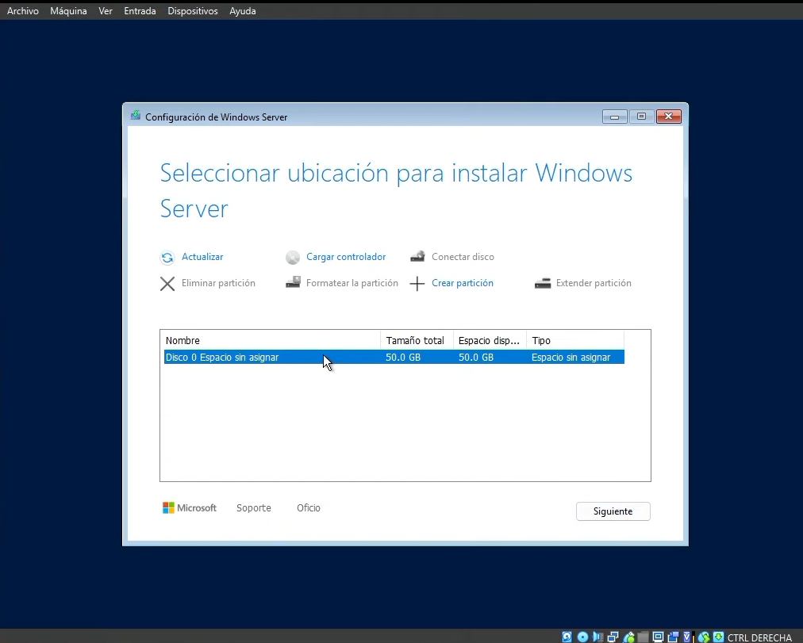
pasamos a la interfas de window server
y ademas empezamos a agregar los roles y caracteristicas
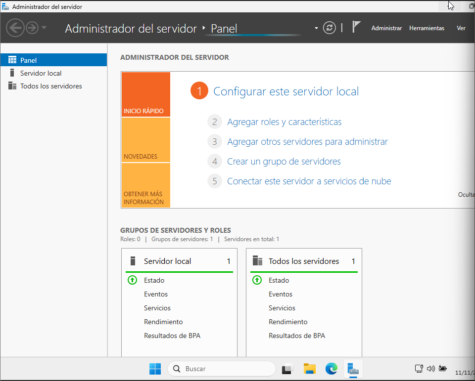
selecione los servicios de dominio, DHCP, DNS y de IIS para tener nuestra pagina web sin problemas
Los demas parametros tenemos que dejarlos tal y como estan y darle en siguiente.
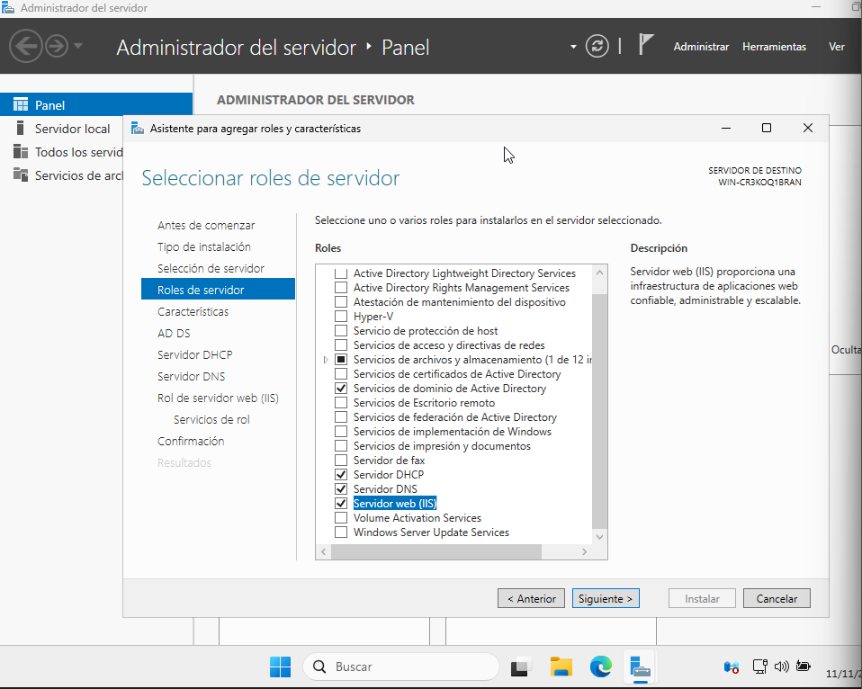
Compruebe y proceda con la instalacion de los servicios.
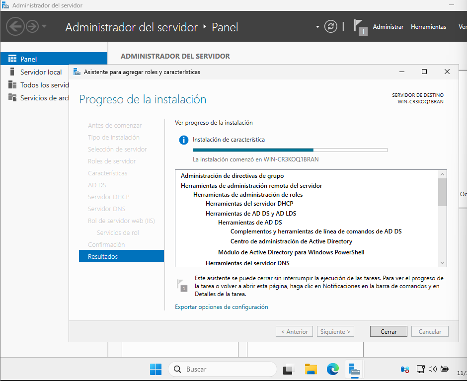
Treminando la instalacion nos deja implementar el iss
y para pasar al administradorde IIS
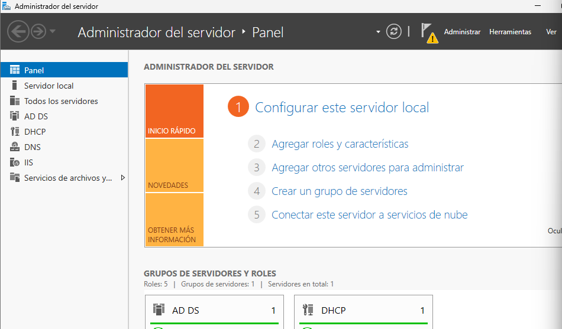
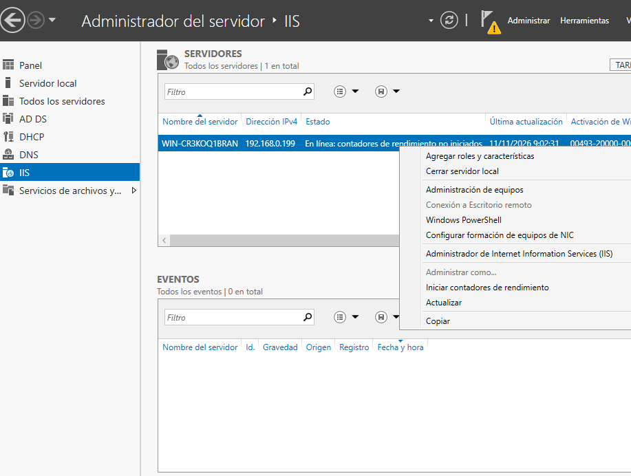
nos aparecera una ventana que nos muestra nuestros sitios, el que es por defecto
y ademas si queremos otro sitio le damos clik derecho a sitios para agregar otro
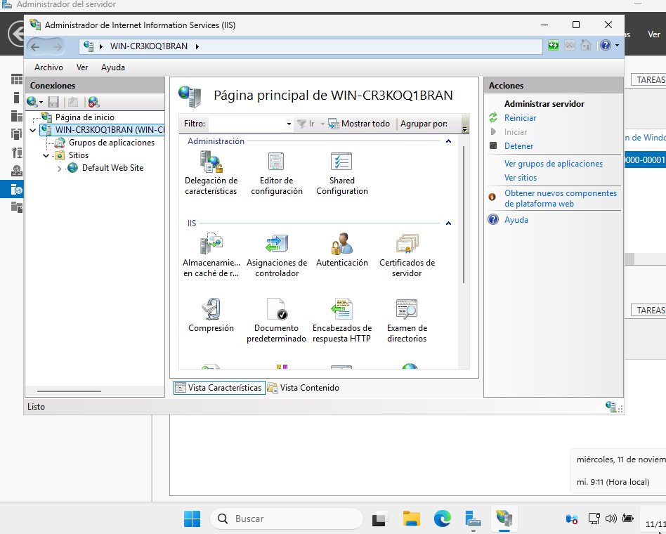
para aceder a la pagina web debemos saber la ip asi que entramos al cmd de windows server y ponemos
el comando "ipconfig"
nos mostrara el direcion con terminacion 0.199 la cual debemos de poner en nuestro navegador si es
que tenemos la MV en adaptador puente
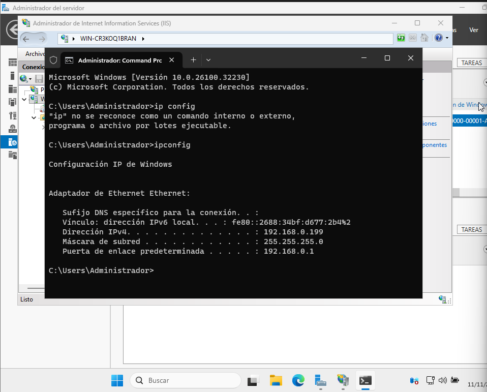
Para al fin observar nuestra pagina web que sale por defecto
Y si uno lo desea puede cambiarlo con un index pero ya es a gusto de cada quien
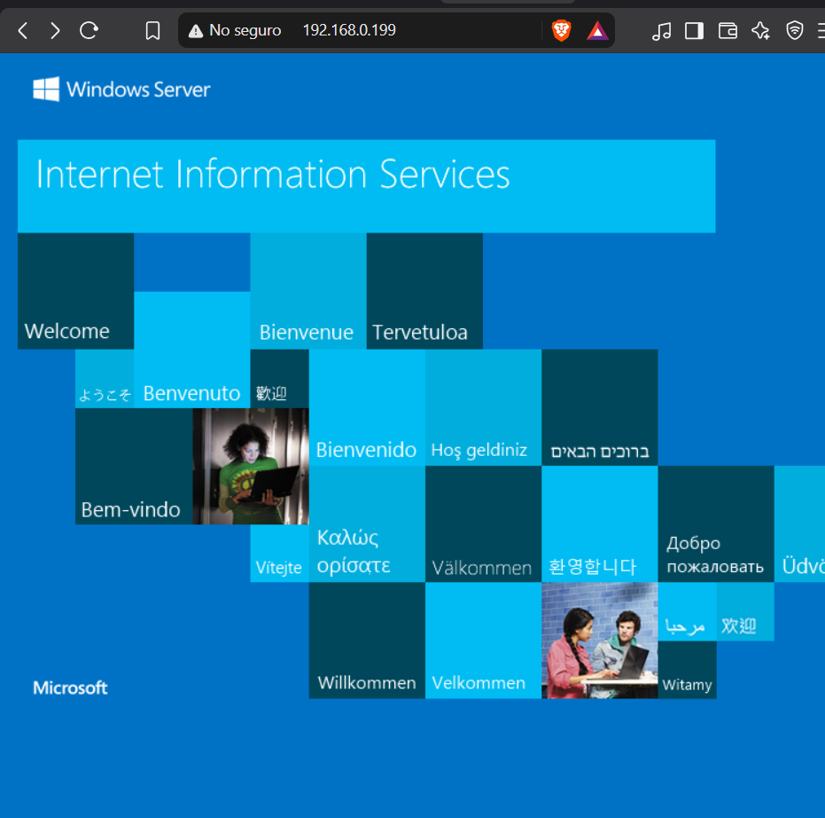
Conclusión sobre IIS:
IIS ofrece una plataforma integrada para alojar sitios y aplicaciones en Windows. Su administración por
sitios y grupos de aplicaciones facilita separar cargas, pero requiere mantener Windows actualizado,
limitar permisos y configurar correctamente enlaces y TLS.